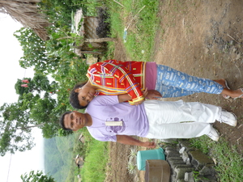
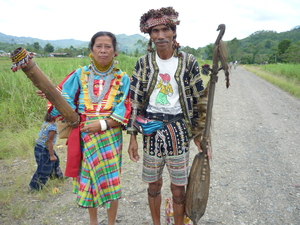

asawa  
/ʔasawa/
n.
“spouse”
1.
n.
spouse
Wrd.Gloss: spouse; husband; wife
Si Abit ka asawa ni Aquino Uban.
Abit was the wife of Aquino Uban.
Eng. spouse; husband; wife
Tag. asáwa; maybáhay; bána
Ceb. asawa; bana
Ilo.: asáwa
Tigwanon: ʔasawa
Binukid: ʔasawa
Cagayano: ʔasawa
Kinamigin: ʔasawa
Obo: ʔasawa
Dibabawon: ʔasawa
Sarangani: ʔesawa
WBM: ʔesawa
Ilianen: ʔesawa
Cotabato Manobo: sawa
Tasaday: sawa
Tagbawa: sawa
Proto: ʔasawa
OCM: Kin Relationships (602)
Online dict status: -
Usage level: L
v.
for a man (eg-asawa, mig-asawa, in-asawa, agent, eg><ø-) to marry a woman (eg-asaween, in-asawa/mig-asawa/pig-asawa, theme, eg><en-)
Eng. marry
DDP: Life (2.6)
Online dict status: -
Usage level: L
v.
for someone (egpakaasawa, nakaasawa, agent, egpAkA-) to become marriaged
Eng. marriaged, to become
Online dict status: -
Usage level: L
vi.
for a man and a woman (egpaasaweey, migpaasaweey/impaasaweey, agent, egpA><ey-) to marry each other
Eng. marry each other
DDP: Life (2.6)
Online dict status: -
Usage level: L
n.
(peg-asaween, peg><en-) wedding
Eng. wedding
Tag. kasál
Ceb. kasal
OCM: Mode of Marriage (583)
DDP: Life (2.6), Wedding (2.6.1.2)
Online dict status: -
Usage level: L
n.
(asawa) husband or wife
Eng. husband or wife
OCM: Mode of Marriage (583)
DDP: Life (2.6)
Online dict status: -
Usage level: L
n.
(asaween, -en) a prospective spouse
Eng. prospective spouse; spouse-to-be; engaged
Online dict status: -
Usage level: M
n.
(pegkaasawa, pegkA-) marriage relationship
Eng. marriage; srelationship, marriage
DDP: Life (2.6)
Online dict status: -
Usage level: L
n.
(ig-asawa, ig><ø-) bride price which is requested by the mother of the bride
Eng. bride price; dowry; price
Tag. dote; bigáy-kaya; bilang
Ilo.: panab-ong
OCM: Arranging a Marriage (584)
Online dict status: -
Usage level: L
n.
(manggiasawa, mangi-) a married person
Eng. married
Online dict status: -
Usage level: L
v.
to someone (egpaasawaan, migpaasawaan, impaasawaan, patient, egpA><an-) letting someone or to give to be wife or husband (igpaasawa, impaasawa, theme, igpA-)
Eng. give, to (wife or husband)
Online dict status: -
Usage level: L
adj.
(talag-asawa, talag-) husband and wife
Eng. couple
Online dict status: -
Usage level: L
Updated by: RJH,JLM,RJH,JLM,RMU,AAA,QDL,QDL,NJK,QDL,QDL
Last updated: 08/Dec/2011
"asawa" in text "A Barrio Captain Introduces Himself (Egpataha te Ngaran)"
"asawa" in text "Aurelio's Marriage"
"nakapangasawa" in text "Long Ago I"
"asawa" in text "Proving Innocence II (When Accused of Adultery)"
"asawa" in text "Proving Innocence II (When Accused of Adultery)"
"asawa" in text "Proving Innocence II (When Accused of Adultery)"
"asawa" in text "Proving Innocence II (When Accused of Adultery)"
"asawa" in text "Death of a Young Man"
"asawa" in text "Death of a Young Man"
"Nakaasawa" in text "Senge lunggunan ne due me anak"
"asawa" in text "Te senge kaapunan, egpanumbaley si Pidru diye te senge baley"
"asawa" in text "Te senge kaapunan, egpanumbaley si Pidru diye te senge baley"
"asawa" in healthbook "Nekey-a ka kahew?"
"asawa" in healthbook "Nekey-a ka kahew?"
"asawa" in healthbook "Nekey-a ka kahew?"
"asawa" in healthbook "Migpamawian ni Inuk ka sumbaley rin ne migpangaliskis"
"asawa" in healthbook "Mania teg pakapatey kag iindes?"
This page last updated: 19/May/2012
Copyright © 2009-2010, Matigsalug Language Christian Association, Inc